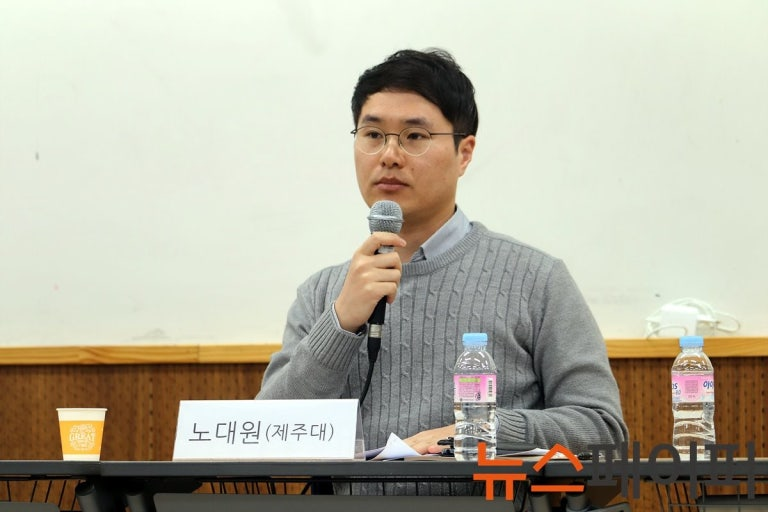
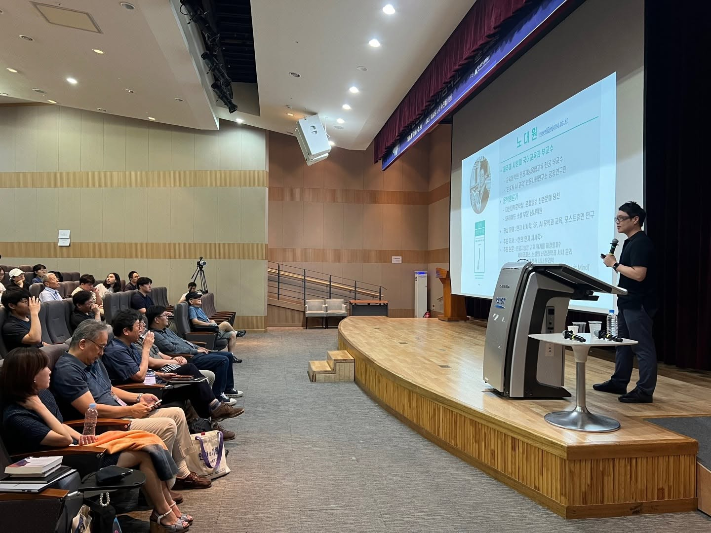

연구
논문·이슈페이퍼·리포트
논문
-
「『몽실 언니』에 나타난 어린 돌봄자(Young Carer)의 생존 서사」, 『가족과 커뮤니티』 14, 전남대학교 인문융합연구원, 2026. (공저)
-
「AI는 문학 이론을 어떻게 다시 쓰는가? - 기술공생 시대의 포스트휴머니즘 미학」, 『영주어문』 제62집, 영주어문학회, 2026.
-
“Beyond Prompt Engineering: Exploring Collaborative Dialogue with GenAI for Problem-Solving”, Cyberpsychology, Behavior, and Social Networking, June 30, 2025. (SSCI, Q1, 공저)
-
「생성형 AI는 인문학 연구를 어떻게 바꿀까?」, 『영주어문』 제59집, 영주어문학회, 2025. (공저)
-
「인간 이후의 문학, 인간 너머의 서사—20세기 한국 포스트휴먼 SF의 출현과 전개」, 『한국현대문학연구』 제74권, 한국현대문학학회, 2024.
-
「취약성과 서사 - 비판적 실천 서사학의 초학제적 접근」, 『인문학연구』 제61호, 경희대학교 인문학연구원, 2024. (공저)
-
「인공지능은 기후 위기를 해결할까? - 한국 SF 속의 기후 위기와 AI 서사」, 『대중서사연구』 제30권 1호, 대중서사학회, 2024.
-
「아기 낳는 로봇 - 저출산 위기와 페미니즘 SF의 재생산 미래주의 비판」, 『어문연구』, 어문연구학회, 2023.12.
-
「소설 가르치는 로봇 － 생성 AI를 활용한 문학교육 교수‧학습 전략과 사례」, 『비평문학』, 한국비평문학회, 2023.12.
-
「ChatGPT 글쓰기 표절 대응과 교육적 활용 전략」, 『국어교육연구』 82호, 국어교육학회(since1969), 2023. (공저)
-
「미래를 다시 꿈꾸기: 한국과 글로벌 SF의 대안적 미래주의들」, 『탈경계인문학Trans-Humanities』 16권 1호, 이화인문과학원, 2023.
-
「소설 쓰는 로봇 - ChatGPT와 AI 생성 문학 -」, 『한국문예비평연구』 77호, 한국문예비평학, 2023.
-
「시리어스 게임을 활용한 청소년 문학교육 방안 연구: <언폴디드> 게임 시리즈를 중심으로」, 『청소년문화포럼』 73호, (사)청소년문화연구소, 2023.
-
「4차 산업혁명 시대의 초·중등 교육을 위한 핵심 역량 연구」, 『디지털콘텐츠학회논문지』 23권 11호, 한국디지털콘텐츠학회, 2022. (공저)
-
「포스트휴먼 (인)문학과 SF의 사변적 상상력」, 『국어국문학』 200호, 국어국문학회, 2022.
-
「위태로운 시대의 취약성 연구 ― 취약성 개념의 초학제적 탐색」, 『비교한국학 Comparative Korean Studies』 30권 1호, 국제비교한국학회, 2022. (공저)
-
「김훈 소설 『공무도하』에 나타난 생존주의와 사랑의 윤리」, 『백록어문교육』 제30집, 백록어문교육학회, 2022.
-
「수사학적 비평과 독자의 불안 - 이청준의 「병신과 머저리」 독해 -」, 『영주어문』 49권 호, 영주어문학회, 2021.
-
「2인칭 소설의 수사학과 서사 효과 - 최윤의 「갈증의 시학」을 중심으로」, 『국어교육연구』 77호, 국어교육학회(since1969), 2021.
-
「인공지능이 인간을 지배할 때 - SF의 인공지능과 특이점 서사」, 『이화어문논집』 54호, 이화어문학, 2021.
-
「사이코패스 소설의 신경과학과 서사 윤리」, 『영주어문』 47권 호, 영주어문학회, 2021.
-
「포스트휴먼, 바이러스, 취약성」, 『국어국문학』193호, 국어국문학회, 2020. (공저)
-
「한국 포스트휴먼 SF의 인간 향상과 취약성」, 『한국문학이론과 비평』 24권 1호, 한국문학이론과 비평학회, 2020.
-
「이청준 소설에 나타난 부재자의 흔적 읽기 모티프 — 자서전적 텍스트성과 프로소포페이아의 수사학」, 『현대문학이론연구』 78호, 현대문학이론학회, 2019. (공저)
-
「SF의 장르 특성과 융합적 문학교육」, 『영주어문』 42권, 영주어문학회, 2019.
-
「최인훈 연작 소설의 아이러니 연구－ 「크리스마스 캐럴」 연작과 「총독의 소리」 연작을 대상으로」, 『비평문학』 제70호, 한국비평문학회, 2018. (공저)
-
「4차 산업혁명 시대 융합교육의 구현 방안 모색 -지역 기반 융합교육 모델을 중심으로」, 『교육과학연구』 제20권 제2호, 제주대학교 교육과학연구소, 2018. (공저)
-
「힐링 담론과 치유의 문학교육」, 『국어교육연구』 68권, 국어교육학회, 2018.
-
「포스트휴머니즘 비평과 SF ― 미래 인간을 위한 문학과 비평 이론의 모색」, 『비평문학』 68호, 한국비평문학회, 2018.
-
「대체 역사 SF의 젠더 정치학 ― 복거일 소설 『비명을 찾아서』의 비판적 독해」, 『Trans-Humanities』 11권 1호, 이화여자대학교 이화인문과학원, 2018.
-
「인지 신경과학과 서사 윤리학」, 『한국문학이론과비평』 21권 4호, 한국문학이론과비평학회, 2017.
-
「현대 서사 문화 속의 제주 해녀 ― 소설, 시, 영화, 웹툰의 해녀 이미지와 그 변화 양상」, 『한국언어문학』 103호, 한국언어문학회, 2017.
-
「이인성 소설에 나타난 소통의 불안 ― 『한없이 낮은 숨결』과 『미쳐버리고 싶은, 미쳐지지 않는』을 중심으로」, 『문학치료연구』 45권, 한국문학치료학회, 2017.
-
「한국 현대소설의 여담(餘談)적 담화 연구: 최인훈의 『서유기』를 중심으로」, 『한국언어문학』 100호, 한국언어문학회, 2017.
-
「한국문학의 세계화 담론에 대한 비판적 성찰 - 세계라는 타자와의 대화를 위하여-」, 『우리말글』 71권, 우리말글학회, 2016.
-
「체계 수사학을 이용한 문학 텍스트 분석과 작문 교육」, 『한국문학이론과비평』 20권 4호, 한국문학이론과비평학회, 2016.
-
「한국 문학의 포스트휴먼적 상상력」, 『Comparative Korean Studies』 23권 2호, 국제비교한국학회, 2015.
-
「서사의 작중인물과 ‘마음의 이론(Theory of Mind)’」, 『현대문학이론연구』 61호, 현대문학이론학회, 2015.
-
「문학적 크로노토프와 신체화」, 『한국문학이론과 비평』 19권 2호, 한국문학이론과 비평학회, 2015.
-
「1960년대 한국 소설의 심신 의학적 상상력」, 『문학치료연구』 33권, 한국문학치료학회, 2014.
-
「이청준 소설의 자서전적 텍스트성」, 『국제어문』 62호, 국제어문학회, 2014.
-
「이인성 소설 『한없이 낮은 숨결』의 수사학적 연구」, 『Comparative Korean Studies』 21권 3호, 국제비교한국학회, 2013.
-
「식민지 근대성의 ‘문화 의사(cultural physician)’로서 이상(李箱) 시」, 『문학치료연구』 27권, 한국문학치료학회, 2013. (* 한국연구재단 우수논문 선정)
-
「유가(儒家)의 자연관으로 본 이청준 소설」, 『문학과환경』 11권 2호, 문학과환경학회, 2012.

이슈페이퍼 및 리포트
-
「작가의 방에 AI가 들어왔다: AI 에이전트가 바꾸는 문학과 문학상」, 『AI 에이전트 시대, 출판생태계의 재편: KPIPA 리포트 18호』, 한국출판문화산업진흥원, 2026. 07.10.
-
「미래를 상상하는 힘, 디자인 픽션: 미래 리터러시를 위한 디자인 픽션 융합교육 방안」, 『이슈페이퍼』 7호, 고려대학교 미래교육연구원, 2026.07.08.
연구 프로젝트
-
기간 2025.07-2025.12
과제명 소설 읽는 로봇 ― AI와 한국 문학의 미래
-
기간 2024.10-2025.09
과제명 글로벌 시대의 한국 과학소설/문화: 사변서사와 과학문화 국제협력 연구
-
기간 2025.01-2026.01
과제명 Fulbright Visiting Scholar Program (Toward Korean Futurism: Reception of Korean Science Fiction in the U.S. and SF Research based on Korean Culture)
-
기간 2024.09- 2025.01
과제명 인문사회과학 연구를 위한 AI 기반 디지털 플랫폼 구축 및 고도화
-
기간 2023.06-2025.05
과제명 21세기 한국 포스트휴먼 SF 서사 연구
-
기간 2022.05-2024.04
과제명 기후 위기 시대의 과학/소설(Science/Fiction): 시민적 상상력을 위한 인류세 서사와 비평 이론 연구
-
기간 2022.01-2022.12
과제명 아기 낳는 로봇? – 한국 페미니즘 SF와 재생산 미래주의
-
기간 2021.09-2027.08
과제명 초중등 대상 AI 교육을 위한 CT_EL기반 교육과정 및 교수학습방법 개발
-
기간 2020.07-2022.12
과제명 취약성과 서사: 비판적 실천 서사학을 통한 한국 사회의 취약성 연구
-
기간 2020.05-2021.04
과제명 한국 신경과학 소설의 서사 윤리학적 연구
-
기간 2019.05-2020.10
과제명 호모 데우스와 호모 파티엔스 사이: 한국 포스트휴먼 SF의 `상처 입을 가능성`
-
기간 2018.
과제명 소설보다 낯선 (대산창작기금 평론 부문)
-
기간 2017.11-2019.10
과제명 호모 파티엔스(Homo Patiens)의 인간학 – ‘상처 입을 가능성(Vulnerability)’ 개념의 재정립을 위한 의학-문학-법학의 초학제적 연구
-
기간 2017.05-2018.04
과제명 인지신경과학에 근거한 서사 윤리학의 재구성
-
기간 2016.05-2017.04
과제명 한국 현대소설의 여담(餘談)적 담화 연구 ― 최인훈의 『서유기』를 중심으로
학술발표·토론
-
2026-05-30
“트러블과 함께 읽기 ㅡ AI 에이전트와 문학 연구자의 대화에 관한 연구“, ‘인공지능 시대의 국어국문학’, 제70회 국어국문학회 전국학술대회
-
2025-11-04
June Jeon, Byungjun Kim, and Daewon Noh, “Doing Humanities with Artificial Intelligence: A Comparative Perspective (AI와 인문학 하기: 비교사회학적 관점)”, 제8회 세계인문학포럼, 안동국제컨벤션센터, 한국연구재단
-
2025-09-20
“The Quantum Leap of Korean Science Fiction: Since 2010,” ‘The Virtual International Conference on the Fantastic in the Arts (VICFA) 2025,’ International Association for the Fantastic in the Arts (발표문: https://omamgwup.gensparkspace.com/)
-
2025-09-19
“Bridging Worlds: Imagination Across Narratives and Technologies,” ‘Speculative Storytelling, Speculative Technologies,’ Korean Studies Institute, University of Southern California
-
2025-04-30
“Korean Futurism? AI, Climate Crisis, and Korean SF,” ‘KOREANIZING AMERICA: K-POP, FEMINISM, AND SCI-FI FROM SOUTH AND NORTH KOREA,’ Marist University
-
2024-08-13
“이야기의 기원: 진화비평과 인지신경 문학이론의 관점에서”, ‘KAIST 인간의기원 여름학교’, KAIST 인간의기원연구소
-
2023-11-10
“인류세에서 노바세(Novacene)로?: 한국 아포칼립스 Cli-Fi 서사의 AI”, ‘The Posthuman, the Human, and the Non-Human: New Narratives and Critical Perspectives in Korean Studies,’ The Korean Literature Association
-
2023-04-28
“이야기 속의 인간: AI 시대의 캐릭터”, ‘사계절 지식 축제’(KFAS Spring 2023), 고등교육재단
-
2023-06-25
“Baby-Making Robots? Criticism of Reproductive Futurism in Korean Feminist Science Fiction,” ‘2023 AAS-in-Asia Conference,’ The Association for Asian Studies (AAS), 경북대학교
-
2023-06-16
홍미선, 김경주, 노대원, “ChatGPT를 활용한 교수학습 방법 제안 ㅡ 프로젝트 학습을 중심으로”, ‘인공지능(AI) 시대, 교육공학의 새로운 접근 방향, 한국교육공학회 춘계학술대회
-
2023-01-30
“AI 이후의 문학과 교육”, ‘AI자동화 사회, 창의성 교육 심포지움’, 을지대 교양교육연구소
-
2023-01-27
“모래의 책, 혹은 바벨의 도서관 - AI 문학의 현재와 미래”, 국제한국문학문화학회 학술대회, 국제한국문학문화학회
-
2022-12-10
[기조 발표] 노대원, 이소영, 황임경, “취약성과 서사교육”, 국어교육학회 학술대회: 취약성에 대한 국어교육적 접근, 국어교육학회(since1969)
-
2022-09-30
“인공지능 시대의 독서”, 제주독서대전 독서포럼
-
2022-05-21
[기조 발표] “포스트휴먼 (인)문학과 SF의 사변적 상상력”, ‘대학 교육의 위기와 국어국문학의 변화 방향’, 제66회 국어국문학회 전국학술대회
-
2021-10-23
[기조 발표] 노대원, 이소영, 황임경, “취약성(Vulnerability) 개념의 이론적, 실천적 가능성: 의학-문학-법학의 초학제적 접근”, 한국국어교육학회 제138회 전국학술대회, 한국국어교육학회
-
2020-12-04
“시를 쓰는 사이코패스 ㅡ 사이코패스의 신경과학과 서사 윤리학”, 2020 현대문학이론학회, 영주어문학회 공동 학술대회
-
2020-09-26
[기조 발표] 노대원, 황임경, “포스트휴먼, 바이러스, 취약성(vulnerability)”, 국어국문학회 학술대회: 포스트휴먼 담론과 국어국문학의 미래, 국어국문학회
-
2018-10-26
“이야기로 꿈꾸기: 제주 문화콘텐츠와 스토리텔링”, JDC 제주신화페스티벌 포럼
-
2014-10-30
“한국 문학의 포스트휴먼적 상상력 — 2000년대 이후 사이언스 픽션을 중심으로”(Posthuman Imagination of Korean Literature: Science Fiction since 2000), ‘질주하는 과학기술시대의 인문학’, 제3회 세계인문학포럼
-
2025.09.11.
Prof. Jessica Pressman의 강연 “Electronic Literature &/as Digital Humanities: An Introduction”에 대한 토론, 인천대학교 인문학연구소. (온라인)
-
2023.11.17.
“생성 AI 시대, 문학의 미래는”, ‘창작자를 위한 생성형 AI와 문화예술정책 토론회: The 문화포럼 현장+’, 더불어민주당 문화예술특별위원회, 국회 의원회관.
